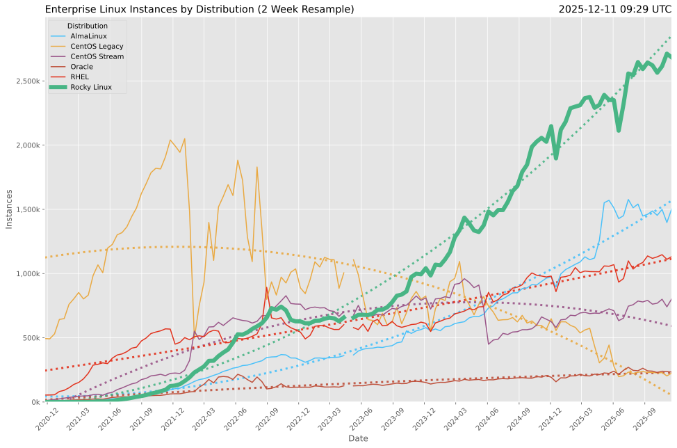
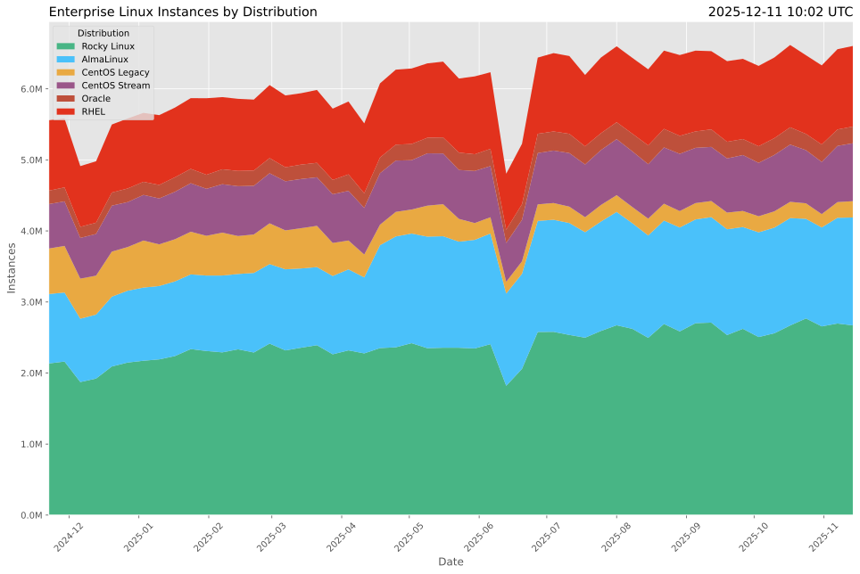
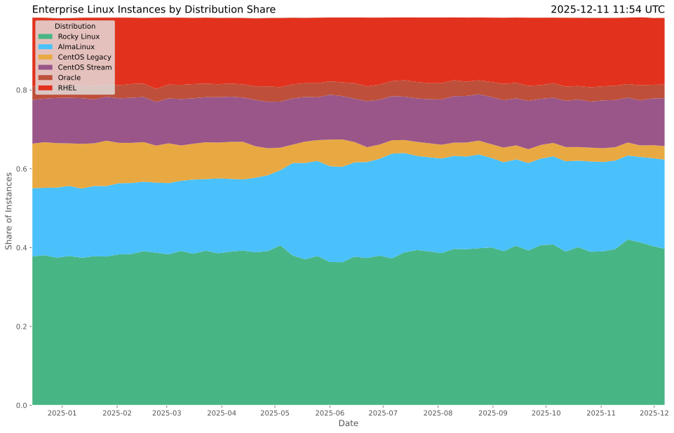
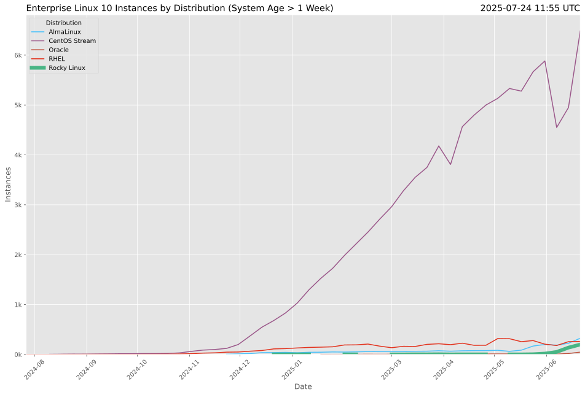

📊 Overall Usage
Enterprise Linux Instances by Distribution (Total)

📊 Distribution Market Share
Enterprise Linux Instances by Distribution (Total)

Enterprise Linux Instances by Distribution Share

📈 Long-term Trends
Long-term Distribution Trends (System Age > 1 Week)

Ephemeral Instances by Distribution (Long-term)

🔥 Recent Activity
Recent Distribution Trends (System Age > 1 Week)

Recent Ephemeral Instances by Distribution

🔢 Version Analysis
Enterprise Linux 8 Instances by Distribution

Enterprise Linux 9 Instances by Distribution

Enterprise Linux 10 Instances by Distribution

🏔️ Rocky Linux Deep Dive
Rocky Linux Instances by System Age

Rocky Linux Instances by Version Share

🏗️ Infrastructure Analysis
Enterprise Linux Instances by System Age and Distribution

Alternative Architecture Usage